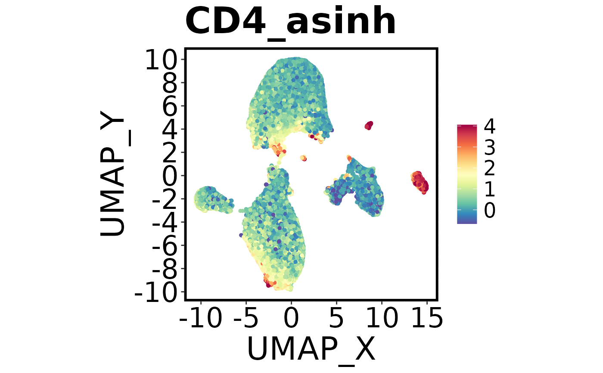

Create a dot plot (e.g., UMAP or tSNE) of cells, coloured by a continuous variable (e.g., marker expression) or a factor (e.g., cluster, group).
Arguments
- dat
A data.table containing the data to plot.
- x.axis
Character. Column name for the x-axis.
- y.axis
Character. Column name for the y-axis.
- col.axis
Character or NULL. Column name for colouring points. If NULL, points are coloured by density.
- col.type
Character. "continuous" (default) or "factor". Determines how
col.axisis interpreted.- add.label
Logical. If TRUE and
col.type = "factor", adds labels at the centroid of each group.- hex
Logical. If TRUE, uses hex binning (only for continuous colour plots).
- hex.bins
Integer. Number of hex bins if
hex = TRUE.- colours
Character. Colour scheme for continuous plots. Options available are: "jet", all options in
RColorBrewer::brewer.pal.info, and all options in viridis pallete. Default is "spectral".- col.min.threshold
Numeric. Minimum quantile for colour scale (continuous).
- col.max.threshold
Numeric. Maximum quantile for colour scale (continuous).
- align.xy.by
data.table. Data to use for aligning x/y axis limits.
- align.col.by
data.table. Data to use for aligning colour scale limits.
- regression.line
Character or NULL. If not NULL, adds a regression line ("lm", "loess", etc.).
- title
Character or NULL. Plot title. Defaults to
col.axis.- filename
Character or NULL. File name for saving the plot. If NULL, a name is generated automatically.
- dot.size
Numeric. Size of points.
- plot.width
Numeric. Width of saved plot (in inches).
- plot.height
Numeric. Height of saved plot (in inches).
- nudge_x,
nudge_y Numeric. Amount to nudge centroid labels (if
add.label = TRUE).- square
Logical. If TRUE, enforces a square aspect ratio.
- legend.loc
Character. Legend position: "right" (default), "bottom", "top", "left", or "none".
- save.to.disk
Logical. If TRUE (default), saves the plot to disk. If FALSE, only displays the plot.
- path
Character. Directory to save the plot.
- blank.axis
Logical. If TRUE, produces a minimalist plot with no axis lines or labels.
- fast
Logical. If TRUE, uses scattermore for faster plotting of large datasets. Note, this will reduce the resolution of the plot. This only works when
col.axisis specified and when hex = FALSE.
Author
Thomas M Ashhurst, thomas.ashhurst@sydney.edu.au Givanna Putri
Examples
Spectre::make.colour.plot(
dat = Spectre::demo.clustered,
x.axis = "UMAP_X",
y.axis = "UMAP_Y",
col.axis = "CD4_asinh"
)
